Cette fiche couvre le déroulement complet de la réponse immunitaire spécifique en 3 phases (induction, amplification, effectrice) et ses dysfonctionnements : allergies (hypersensibilité) et SIDA (immunodéficience acquise).
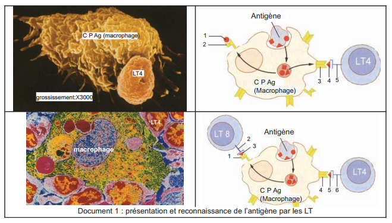
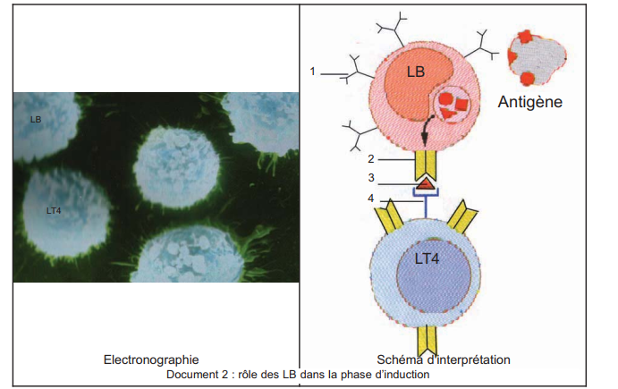
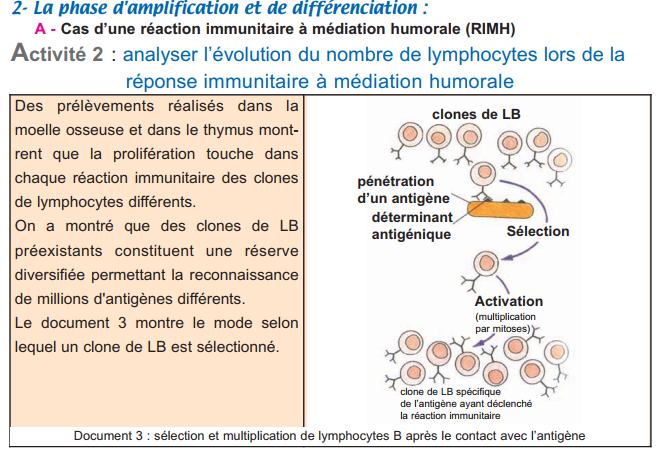
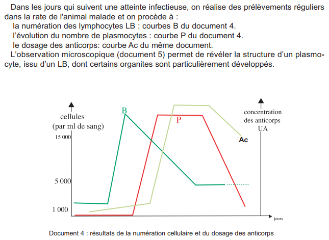
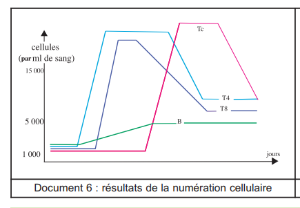
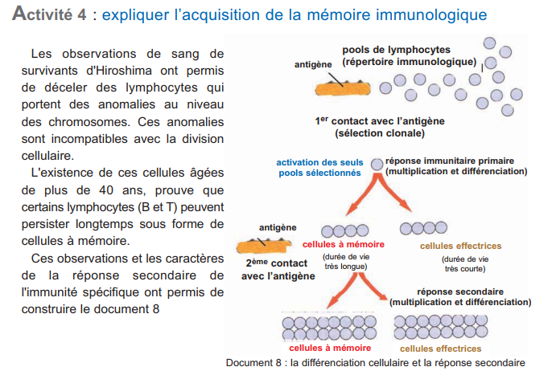
| RIMH | RIMC | |
|---|---|---|
| Cellule activée | LB (reconnaît Ag) | LT8 (reconnaît HLA I + peptide) |
| Multiplication | Clone de LB spécifiques | Clone de LT8 spécifiques |
| Différenciation | → Plasmocytes (sécrètent Ac) → LB mémoire | → LTc (cytotoxiques) → LT8 mémoire |
| Effecteur | Anticorps (immunoglobulines) | LTc (perforine) |
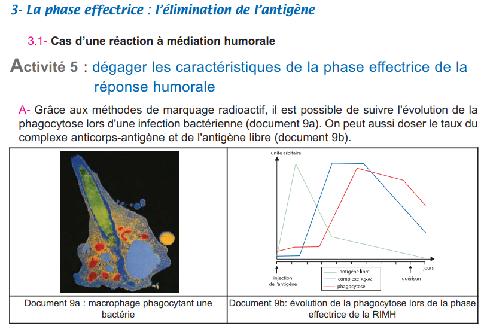
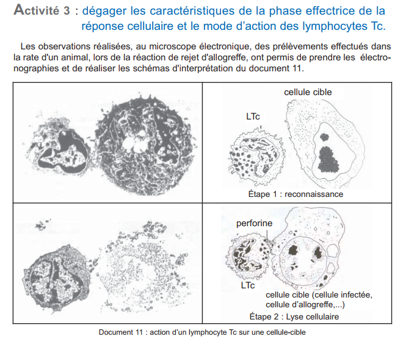
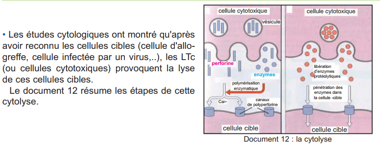
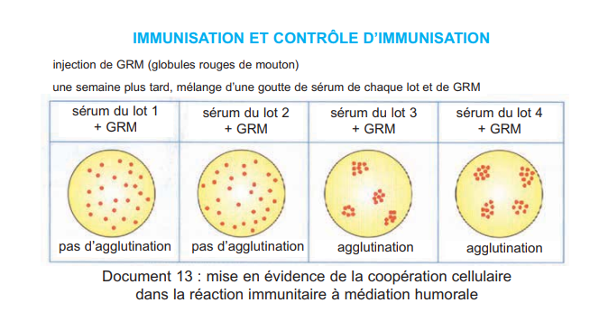
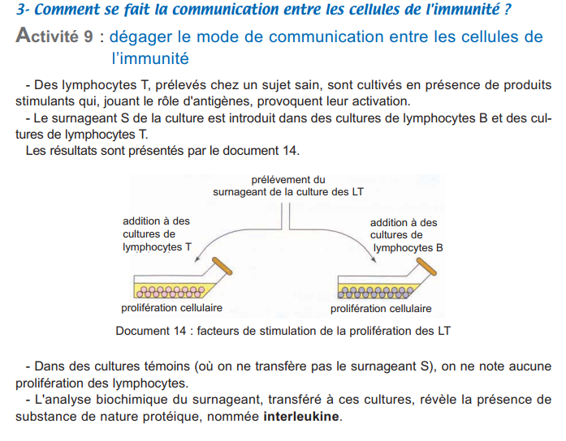
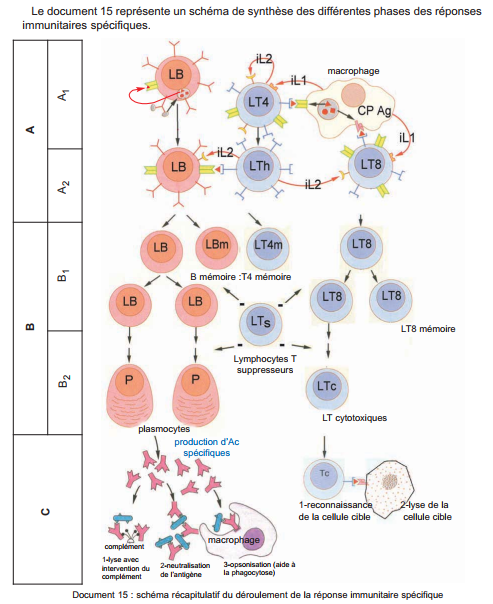
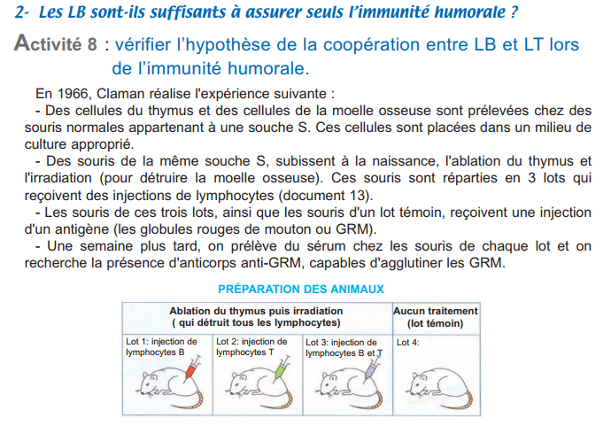
| Interleukine | Origine | Cible | Effet |
|---|---|---|---|
| IL1 | Macrophage (CPAg) | LT4 | Active les LT4 → sécrétion d'IL2 |
| IL2 | LT4 activé | LT4, LB, LT8 | Multiplication et différenciation de TOUS les lymphocytes activés |
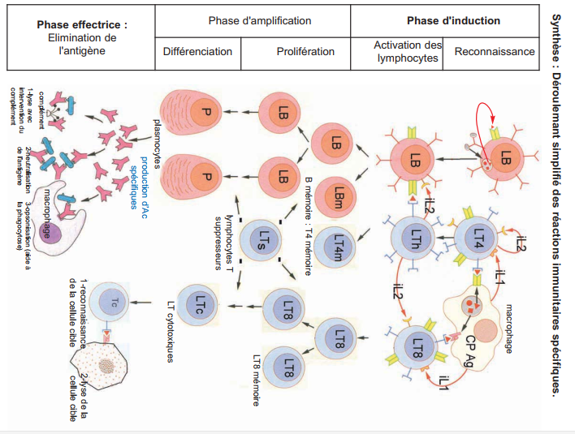
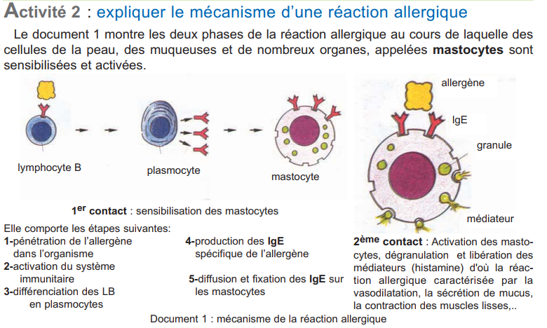
Antigène inoffensif (pollen, poussière, aliments, médicaments…) qui déclenche une réponse immunitaire exagérée chez certains individus.
1er contact → LB → plasmocytes → IgE → fixation sur récepteurs des mastocytes (cellules de la peau/muqueuses). Aucun symptôme.
2ème contact → allergène fixé sur 2 IgE adjacentes → pontage → dégranulation mastocytes → libération d'histamine → vasodilatation, œdème, contraction muscles lisses.
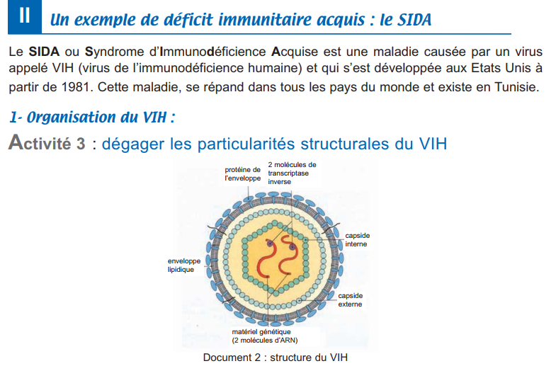
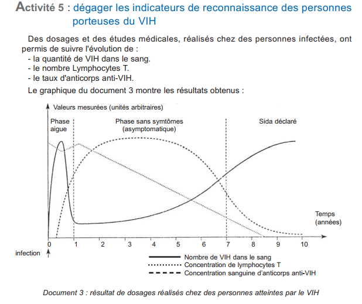
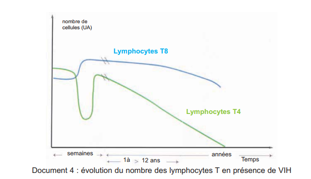
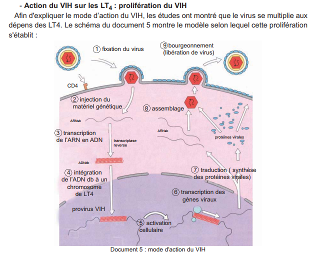
Un cobaye A immunisé contre la diphtérie. Après 15 jours, on prélève du sérum et des lymphocytes vivants qu'on transfère à des cobayes B et C. Le même jour, injection de bacille diphtérique.
🐹 A (immunisé) → sérum → 🐹 B + toxine diphtérique → SURVIE ✅
🐹 A (immunisé) → lymphocytes → 🐹 C + toxine diphtérique → MORT ❌
| RIMH | RIMC | |
|---|---|---|
| Cellules effectrices | ||
| Molécules sécrétées | ||
| Résultat de la réaction |
Chez un cobaye, 1ère injection d'ovalbumine (0,1 mg). Deux semaines plus tard, 2ème injection identique → immédiatement toux, écoulement nasal, dyspnée. Non traité, l'animal meurt d'asphyxie.
Complète chaque texte en choisissant les bons termes.
Textes de synthèse à compléter.
Questions 1-2 : Ch.3 manuel · 3-6 : Ch.4 manuel · 7-21 : complémentaires